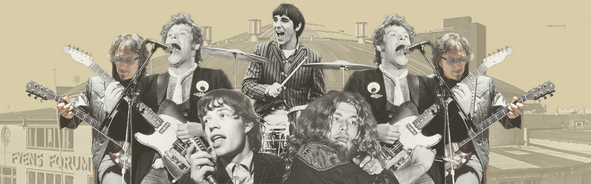

24. juni - 15. august 2019
Oplev Fyens Forum:
Sommerudstilling 2019
Kort om udstillingen
Fyens Forum var Odenses største udstillingssted, som husede alt fra koncerter, sportsbegivenheder, udstillinger og større politiske møder. Bygningen stod i 42 år fra 1936 til 1978, hvor det blev revet ned for at give plads til byudviklingen
i området.
Internationale kunstnere som Led Zeppelin, Rolling Stones, The Sweet, Paul McCartney og Louis Armstrong har lagt vejen forbi Fyens Forum.
Den 24. juni 2019 kl. 15.30 slår ODEON dørene op for udstillingen, som
er lavet i samarbejde med Historiens Hus. Udstillingen vil være på nedre og øvre foyer i ODEON, hvor der vil blive opsat en masse billeder fra dengang.
Udstillingen åbnes af borgmester Peter Rahbæk Juel, og efterfølgende
vil ODEONs Rytmiske Kor give en lille
koncert på Byens Scene. Alle er velkomne til åbningen.
Udstillingen er ganske gratis, og vil blive stående helt frem til den 15. august 2019.
Del din historie
Har du materiale fra
Fyns Forum, og kunne
du godt tænke dig at
dele det mede med os?
Du skal bare trykke på
knappen, så bliver du
sendt videre til vores
delingsside!